화약류관리기사 (2017-09-23 기출문제)
1과목: 일반화약학
1. 화합화약류에 속하는 것은?
- 질산암모늄 폭약
- 초안유제 폭약
- 흑색화약
- 니트로글리세린
(정답률: 88%)

2. 소형 로케트의 일종으로 선박간의 신호나 긴급히 구조를 요청할 때 사용하는 것은?
- 신호뇌관
- 신호홍염
- 신호염관
- 신호화전
(정답률: 72%)
3. 폭속이 큰 순서대로 옳게 나타낸 것은? (단, NG는 니트로글리세린, PA는 피크린산, RDX는 헥소겐을 나타낸다.)
- NG > RDX > PA
- RDX > NG > PA
- RDZ > PA > NG
- PA > NG > RDX
(정답률: 88%)
4. 뇌홍에 대한 설명으로 옳은 것은?
- 비중에 관계없이 폭발속도는 일정하다.
- 알코올, 에테르, 물에 잘 용해된다.
- 폴민산수은(Ⅱ)이라고 화학식은 Hg(ONC)2이다.
- 600kg/cm2 이상의 강압에 의해서도 사압(死壓)에 도달하지 않는다.
(정답률: 82%)
5. 질산에스테르의 자연분해 현상으로 가장 거리가 먼 것은?
- 흡습에 의한 가수분해
- 열에 의해 분해반응
- 안정제 과다 혼입에 의한 환원반응
- 화약 속에 함유된 산에 의해 분해촉진
(정답률: 88%)
6. 폭약을 사용하여 금속을 강판에 폭발압접하고자 할 때 가장 잘 압접되는 금속은?
- 알루미늄
- 티타늄
- 스테인레스 스틸
- 황동
(정답률: 84%)
7. 다음 뇌관 중 전기식 뇌관이 아닌 것은?
- LP 뇌관
- TLD 뇌관
- MS 뇌관
- HS 뇌관
(정답률: 89%)
8. TNT 1g당 산소평형 값(g)은 얼마인가?
- -0.74
- 0
- +0.035
- +0.2
(정답률: 81%)
9. 화약류의 파괴효과(동적효과)를 측정하는 시험방법은?
- Hess 맹도시험
- Trauzle 연주시험
- 낙추시험
- 유리산시험
(정답률: 89%)
10. 니트로글리세린 100g이 완전폭발 하였을 경우 산소의 과부족량은 얼마인가? (단, 질소의 원자량은 14이다.)
- -3.52g
- -1.76g
- +1.76g
- +3.52g
(정답률: 80%)
11. 초유폭약의 설명으로 옳지 않은 것은?
- 타격감도가 낮고 취급상 비교적 안전하다.
- 약경이 30mm 이상은 폭굉파가 불완전하게 전달된다.
- 장전밀도가 너무 크면 사압에 의한 불폭의 우려가 있다.
- 흡습성이 크고 후가스가 나빠 갱외에서 사용된다.
(정답률: 68%)
12. 다음 화약류 중 자연분해의 경향이 작은 것만으로 되어 있는 것은?
- 다이너마이트, 테틀릴, ANFO
- 면약, DDNP, PETN
- 흑색화약, 무연화약, TNT
- 컴포지션-B, 아지화납, 헥소겐
(정답률: 81%)
13. 디니트로나프탈렌(DNN)의 분자식은?
- C10H6(NO2)2
- C2H4(ONO2)2
- C6H2(NO2)3CH3
- C6H3(NO2)2CH3
(정답률: 65%)
14. 공업뇌관의 성능을 측정하려고 할 때 사용되는 시험법은?
- 가열시험
- 납판시험
- 맹도시험
- 구포시험
(정답률: 87%)
15. 도폭선의 폭속범위로 가장 적합한 것은?
- 1000~2500m/s
- 2500~4000m/s
- 4000~5500m/s
- 5500~7000m/s
(정답률: 74%)
16. 다음 화약 중 질산에스테르 화합물로만 구성되어 있는 것은?
- 니트로글리콜, 펜트리트, 디니트로나프탈렌
- 니트로셀룰로오스, 니트로글레세린, 펜트리트
- 니트로셀룰로오스, 트리니트로톨루엔, 디니트로나프탈렌, 테트릴
- 니트로셀룰로오스, 니트로글레세린, 헥소겐, 테트릴
(정답률: 88%)
17. 콤포지션-C 폭약에 대한 설명으로 옳은 것은?g
- TNT, RDX, WAX를 혼합한 폭약
- NT, RDX를 혼합한 폭약
- RDX에 가소제를 배합한 폭약
- RDX에 WAX를 첨가한 폭약
(정답률: 89%)
18. 다음 반응식과 같이 100g의 질산칼륨이 분해된다면 몇 g의 산소가 발생하는가? (단, 원자량은 K39, N14, O16이다.)
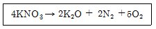
- 396.6g
- 19.8g
- 39.6g
- 190g
(정답률: 82%)
19. 흑색화약 혼합성분의 역할에 대한 설명 중 옳은 것은?
- 질산칼륨은 산소와의 결합제이며 목탄은 점화를 돕고 황은 산소와 결합하여 가스를 발생시킨다.
- 질산칼륨은 산화제이며 목탄은 점화온도를 낮게하고 황은 가스의 발생원이 되어 충격감도를 둔화시킨다.
- 질산칼륨은 점화를 돕고 목탄은 산소와의 결합제이며 황은 산화제이다.
- 질산칼륨은 산화제이고 목탄은 가스의 발생원이 되어 충격감도를 둔화시키며 황은 점화온도를 낮게 한다.
(정답률: 76%)
20. 도화선에 관한 설명으로 틀린 것은?
- 도화선이 흡습하면 연소초시가 변화된다.
- 도화선의 연소초시를 1m에 대하여 100~140초 사이에 있다.
- 수심 1m에서 제2종 도화선의 내수성은 2시간 이상이어야 한다.
- 도화선의 심약은 무연화약이 사용된다.
(정답률: 88%)
2과목: 발파공학
21. 발파계수에 관한 설명으로 옳은 것은?
- 암석계수 g는 폭약 1kg을 사용하여 발파할 때 얻을 수 있는 채석ㄹ량을 의미한다.
- 폭약계수 e는 NG 60%스트렝스 다이너마이트를 기준으로 다른 폭약과 발파위력을 비교하는 계수이다.
- 폭약의 성능이 좋을수록 폭약계수 e 값은 커진다.
- 전색계수 d는 불완전 전색일 경우 1.0보다 작은 값을 가진다.
(정답률: 62%)
22. 발파진동 저감방안 중에서 진동전파경로를 차단하는 방법은?
- Smooth Blasting
- Pre-splitting
- 다단식 발파기의 적용
- 저폭속 폭약의 사용
(정답률: 60%)
23. 발파작업 시 발생되는 정전기의 원인과 폭발방지 대책에 대한 설명으로 틀린 것은?
- 강풍으로 인한 암분, 눈보라 등이 비산될 때 정전기가 발생한다.
- 중장비에서 불연소된 탄소 알갱이가 배기구에서 나올 때 정전기가 발생된다.
- ANFO 장전시 발생에 따른 오폭을 방지하기 위하여 장전 속도를 높여 최대한 신속히 장전한다.
- 전기뇌관의 각선은 장갑 등을 끼고 강하게 또는 반복해서 신장시키지 않는다.
(정답률: 67%)
24. 다음 표는 현장에 시간대별 각 성분별 계측된 자료이다. 가장 큰 실벡터합은 약 얼마인가?
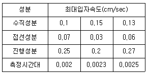
- 0.25 ㎝/sec
- 0.42 ㎝/sec
- 0.31 ㎝/sec
- 0.28 ㎝/sec
(정답률: 46%)
25. 전파속도가 400m/s 이고, 진동수가 10Hz인 진동의 진폭을 절반으로 감소시키려할 때 적절한 반진구의 깊이는 얼마로 하여야 하는가?
- 4m
- 6m
- 8m
- 10m
(정답률: 48%)
26. 백브레이크(Back breake)와 오버행(Over hang)에 대한 설명으로 틀린 것은?
- 계단발파에서 벤치높이가 최소저항선보다 극히 작을 때 백브레이크가 발생한다.
- 계단발파에서 벤치높이가 최소저항선보다 극히 클 때 오버행이 발생한다.
- 계단발파에서 전열 발파시 발파 충격으로 내부 암석에 균열이 생기는 현상을 백브레이크라고 한다.
- 계단발파에서 상부를 발파하여 하부의 암석을 암석의 중량으로 파괴시킬 때 하부의 암석이 파괴되지 않고 수직 이상의 급각도로 남는 상태를 오버행이라고 한다.
(정답률: 61%)
27. 다음 중 수중발파 설계 시 고려할 요소로 가장 거리가 먼 것은?
- 지반진동
- 발파 후 가스
- 수중충격파
- 폭약의 선정
(정답률: 54%)
28. 에멀젼 폭약의 대한 설명으로 옳은 것을 모두 나타낸 것은?
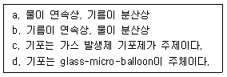
- a, c
- b, c
- a, d
- b, d
(정답률: 56%)
29. 수중발파 시 폭발 진행 과정 순서로 옳은 것은?
- 충격파의 분산 → 표면 분출 → 암석 및 점토방풀 → 완만한 상승
- 표면 분출 → 충격파의 분산 → 암석 및 점토방풀 → 완만한 상승
- 암석 및 점토 방출→ 충격파의 분산 → 표면 분출 → 완만한 상승
- 표면 분출 → 암석 및 점토방출 → 충격파의 분산 → 완만한 상승
(정답률: 42%)
30. 발파의 위험구역 내의 통행을 막기 위하여 경계원을 배치할 때 경계원에게 확인시켜야 하는 사항으로 가장 거리가 먼 것은?
- 경계하는 위치
- 경계하는 구역
- 발파횟수
- 통행자 확인방법
(정답률: 65%)
31. 계단식 발파에서 공저 장약밀도(Ib)를 단위 천공길이당 폭약량(kg/m)으로 정의할 때, 64mm 직경의 발파공에 장약밀도 0.8kg/L 인 ANFO를 장전할 때 공저 장약밀도는?
- 약 1.6kg/m
- 약 2.6kg/m
- 약 3.6kg/m
- 약 4.6kg/m
(정답률: 50%)
32. Trim Blasting에 관한 설명으로 옳지 않은 것은?
- 주발파 후 발파가 이루어진다.
- 일반적으로 서브드릴링을 실시하지 않는다.
- 저항선은 천공간격보다 작게 하여 발파 시 후방파괴를 방지한다.
- 공저장약은 주상장약밀도보다 높게 장약한다.
(정답률: 55%)
33. 다음 중 지발발파에 대한 설명으로 옳지 않은 것은?
- 지발발파는 일반적으로 LP발파와 MS발파로 나눌 수 있다.
- MS발파는 첫 번째 폭약의 폭발에 의한 충격작용이 사라지기 전에 다음 폭약을 기폭하며 그 시간의 간격은 100ms이상이 가장 효과적이다.
- 지발발파에서 지발전기뇌관의 시차가 짧을수록 암석은 작게 파쇄되고 멀리 비산한다.
- 시차를 임의로 선택해서 지발발파를 실시하고자 할 경우 다단식발파기를 사용할 수 있다.
(정답률: 50%)
34. 폭야의 특성 중 폭발시 동적요과에 가장 큰 영향을 주는 것은?
- 비중
- 가스발생량
- 내수성
- 폭발속도
(정답률: 71%)
35. 폭약의 폭발로 인해 발생하는 응력파의 파장이 비교적 짧은 경우 Hopkinson 효과에 의해 인장파가 발생한다고 가정할 때 자유면에 도달하는 최대 응력치가 50Mpa, 파장이 1m, 암반의 동적인장강도가 5Mpa이면 반사파에 의해 파단되는 평판두께는?
- 0.⑤m
- 0.1m
- 5m
- 10m
(정답률: 45%)
36. 전기뇌관 3개를 직렬결선하고 다시 이것을 5열 병렬결선한 직·병렬 결선이 있다. 소요전압은 몇 볼트인가? (단, 전기뇌관은 1개의 저항 1.5Ω, 발파모선 1m당 0.02Ω, 총 연장 100m, 발파기의 내부저항 0, 소요전류는 2(A)로 한다.)
- 49V
- 34V
- 29V
- 25V
(정답률: 45%)
37. 터널 면적과 천공경에 따른 비천공장 및 비장약량에 대한 설명으로 옳지 않은 것은?
- 터널 면적이 넓어질수록 비천공장은 감소한다.
- 터널 면적이 넓어질수록 비장약향은 감소한다.
- 천공경이 클수록 비천공장은 짧아진다.
- 천공경과 비장약향은 무관하다.
(정답률: 62%)
38. 단일 자유면에서 서로 다른 저항선을 가진 두 개의 발파공으로 인해 생긴 누두공이 비슷한 모양이면 채석용적과 최소 저항선과의 관계는?
- 채석용적은 최소 저항선의 3승에 비례한다.
- 채석용적은 최소 저항선의 3승에 반비례한다.
- 채석용적은 최소 저항선의 2승에 비례한다.
- 채석용적은 최소 저항선의 2승에 반비례한다.
(정답률: 56%)
39. Pre-splitting 발파 시 장약량의 결정에 관한 설명으로 옳지 않은 것은?
- 천공경의 2배가 되면 장약량도 2배가 된다.
- 발파계수가 2배가 되면 장약량도 2배가 된다.
- 공간격이 2배가 되면 장약량도 2배가 된다.
- 천공길이가 2배가 되면 장약량도 2배가 된다.
(정답률: 60%)
40. 전기발파를 위한 작업 시 발파모선 및 보조모선을 배선할 때 주의사항으로 옳지 않은 것은?
- 배선이 상할 염려가 있는 곳은 보조모선대신 발파모선을 사용한다.
- 낙반이나 붕괴가 없는 안전한 위치를 선정하여 배선한다.
- 누전 및 지전류를 없애기 위해 철관, 레일, 동력선 등은 피하여 배선한다.
- 결선부는 다른 선과 접촉되지 않도록 한다.
(정답률: 63%)
3과목: 암석역학
41. 일정수직하중 조건하에서 실시된 직접전단시험에 의한 거친 절리면의 거동 특성으로 옳지 않은 것은?
- 수직응력이 증가함에 따라 수직변위도 증가한다.
- 수직응력이 증가함에 따라 전단강도도 증가한다.
- 수직응력과 전단강도 간의 관계가 일반적으로 비선형을 나타낸다.
- 최대전단응력에 도달한 이후 전단변위의 증가와 함께 전단응력이 감소한다.
(정답률: 35%)
42. 다음 중 축 방향 점하중강도지수(Is)를 구하는 식으로 옳은 것은? (단, P는 파괴하중, A는 파괴면의 면적이다.)
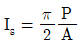
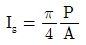
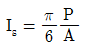
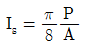
(정답률: 55%)
43. 다음 중 초기지압 측정법은?
- 수압파쇄법
- 공내변형시험
- 평한재하시험
- Lugeon 시험
(정답률: 67%)
44. 일축압추강도가 동일한 암석 a, b에 발생한 수직변형률의 비(ϵa/ϵb)가 8/15라면, 암석 a, b의 탄성계수의 비(Ea/Eb)는? (단, a, b 암서의 수직변형률을 각각 ϵa, ϵb로, 탄성계수를 각각 Ea, Eb로 표시한다.)
- 16/15
- 15/16
- 15/8
- 8/15
(정답률: 55%)
45. Q-system을 구성하고 있는 인자가 의미하고 있는 항목 중 RMR에서는 고려하지 않는 것은?
- RQD
- 암석의 강도
- 응력조건
- 불연속면의 상태
(정답률: 39%)
46. 다음 중 순수전단변형률(Pure shear strain) 상태를 나타내는 것은?
- 1/2(ϵx+ϵy)=상수>0
- ϵx+ϵy=2ϵx
- 1/2(ϵx-ϵy)=상수>0
- 1/2(ϵx+ϵy)=0
(정답률: 56%)
47. 다음 중 점도(viscosity)의 단위는?
- Pa·m
- Pa
- Pa·s
- Pa/m
(정답률: 59%)
48. 탄성이론을 표현하는 역학적 모델 중 점탄성체를 나타내는 Kelvin 물체는? (단, σ:응력, E:탄성계수, η:점성계수)
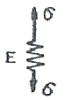
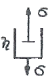
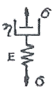
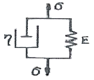
(정답률: 57%)
49. 다음 중 암반 내 작용하는 수직방향지압(ϵv)에 대한 수평방향지압(σh)의 비를 나타내는 측압계수 K를 올바르게 표기하는 것은? (단, 수평방향의 변형률은 0이고, v는 포아송비이다.)
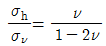
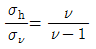
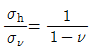
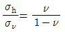
(정답률: 48%)
50. 이차원 상태의 미소 평면에 τxy=0, σx=46Mpa, σy=12Mpa의 응력이 작용하고 있을 때, 최대 전단응력의 크기는?
- 12Mpa
- 17Mpa
- 34Mpa
- 44Mpa
(정답률: 52%)
51. 직경 5.4cm 두께 2.78cm인 암석 disc로 간접인 장시험(Brazilian test)을 한 결과 2.83ton에서 파괴되었을 때, 이 암석의 인장강도는?
- 약 39.3 kg/cm2
- 약 60 kg/cm2
- 약 120 kg/cm2
- 약 189 kg/cm2
(정답률: 36%)
52. Griffith 파괴이론에 대한 설명으로 옳지 않은 것은?
- 중간주응력을 파괴에 영향을 주는 요인으로 고려한다.
- 전단강도는 인장강도의 2배가 되는 것으로 나타난다.
- 단축압축강도는 단축인장강도의 8배가 되는 것으로 나타난다.
- 암석 내에 포함된 균열 첨단부의 곡률반경이 작을수록 강도는 낮아진다.
(정답률: 63%)
53. RMR 분류법에 대한 설명으로 옳지 않은 것은?
- 지하수 상태를 고려하지 않는다.
- 터널의 무지보 구간의 자립시간을 평가할 수 있다.
- 기초 RMR을 평가하기 위한 분휴 요소 중 배점이 가장 높은 것은 절리상태이다.
- 기초 RMR을 평가하기 위한 분류효소에는 불연속면의 방향성은 포함되지 않는다.
(정답률: 53%)
54. 지하 100m 지점에 반경 6m의 원형공동을 수평방향으로 굴착하였을 때, 터널의 측벽부에 작용하는 응력 중 접선응력의 크기는? (단, 등방의 탄성암반이며, 포아송비는 0.25, 연직응력은 1m 심도당 0.027Mpa 증가하며, 터널의 단면적에 대한 수평터널의 길이는 충분히 긴 것으로 가정한다.)
- 3.2 Mpa
- 7.2 Mpa
- 8.2 Mpa
- 9.2 Mpa
(정답률: 46%)
55. 동일한 시험편을 이용한 강도시험 결과에 대한 설명으로 옳지 않은 것은?
- 전단강도는 인장강도 보다 작다.
- 일축압축강도는 인장강도 보다 크다.
- 삼축압축강도는 전단강도 보다 크다.
- 일축압축강도는 삼축압축강도보다 작다.
(정답률: 55%)
56. 암석의 탄성파속도에 대한 설명으로 옳지 않은 것은?
- 암석의 온도상승과 함께 P파 속도는 감소한다.
- 공극률이 큰 암석에서 S파 속도는 함수상태에 따라 변화한다.
- 암석에 작용하는 구속응력이 증가할수록 탄성파속도는 증가한다.
- 층상을 나타내는 암석에서는 층에 평행한 방향의 속도는 수직방향의 속도보다 크게 나타난다.
(정답률: 56%)
57. 다음 암반사면의 안전해석에 적용할 수 없는 방법은?
- 영향도표법
- 유한차분법
- 평사투영법
- 한계평형법
(정답률: 52%)
58. 일축압축강도 100kg/cm2, 인장강도 10kg/cm2인 암석의 전단강도는? (단, 압열인장시험을 고려한 전단강도 추정식을 사용한다.)
- 13.9 kg/cm2
- 18.9 kg/cm2
- 23.9 kg/cm2
- 28.9 kg/cm2
(정답률: 47%)
59. 암반 불연속면의 종류 중 광물의 배열 형태에 따라 발생하고, 타격 시 광물 결정의 결합력이 약한 면을 따라 파괴되며 발생하는 불연속면은?
- 층리
- 엽리
- 편리
- 벽개
(정답률: 55%)
60. 변형률경화(Stain-hardening)에 대한 설명으로 옳은 것은?
- 항복응력에서 영구변형률이 발생하는 현상을 말한다.
- 응력을 제거하는 경우 탄성변형률이 회복되는 현상을 말한다.
- 소성변형률이 증가함에 따라 항복응력이 커지는 현상을 말한다.
- 소성변형률이 증가함에 따라 항복응력이 감소하는 현상을 말한다.
(정답률: 65%)
4과목: 화약류 안전관리 관계 법규
61. 지상에 설치하는 3급 저장소의 위치·구조 및 설비의 기준에 대한 설명으로 옳은 것은?
- 저장소의 벽(앞면의 벽을 제외한다)은 두께 30cm이상의 철근콘크리트로 하고, 앞면의 벽은 두께 20cm이상의 콘크리트로 할 것.
- 지붕은 견고한 구조로 하여 폭발시 멀리 흩어지지 않도록 할 것.
- 화약 또는 폭약과 화공품을 동시에 저장하기 위한 격벽의 기초는 저장소의 기초에 두께 20cm이상의 콘크리트로 할 것.
- 저장소의 주위에는 흙둑 또는 간이흙둑을 설치할 것.
(정답률: 65%)
62. 초유폭약에 의한 발파의 기술상의 기준에 대한 설명으로 틀린 것은?
- 장전작업중에는 습기가 차거나 불순물이 섞여 들어가지 아니하도록 할 것.
- 기폭량에 적합한 전폭약을 같이 사용할 것.
- 철관류·궤도 또는 상설의 전기접지계통은 접지용으로 사용하지 아니할 것.
- 불발된 천공된 구멍으로부터 초유폭약 또는 메지등을 제거하는 때에는 압축공기를 사용할 것.
(정답률: 72%)
63. 다음 중 폭약 1톤에 해당하는 화공품의 수량으로 옳은 것은?
- 총용뇌관 250만개
- 미진동파쇄기 2만5천개
- 신관 또는 화관 50만개
- 신호뇌관 100만개
(정답률: 73%)
64. 사용허가를 받지 아니하고 화약류를 사용할 수 있는 사람으로서 건축, 토목 공사용으로 1일 동일한 장소에서 사용할 수 있는 수량으로 옳은 것은?
- 건설용 타정총용 공포탄 - 5000개 이하
- 미진동 파쇄기 - 250개 이하
- 폭발병 - 1000개 이하
- 폭발 천공기 - 100개 이하
(정답률: 60%)
65. 지하 1급 저장소의 지반의 두께가 8.0m일 경우 저장할 수 있는 최대 폭약량은?
- 1톤
- 2톤
- 3톤
- 4톤
(정답률: 55%)
66. 꽃불류저장소 주위의 방폭벽에 대한 설명으로 옳지 않은 것은?
- 방폭벽은 꽃불류저장소의 바깥벽과의 거리가 1.5m 이상이 되도록 할 것
- 방폭벽은 두께 15cm 이상의 철근콘크리트로조로 할 것
- 방폭역은 꽃불류저장소의 처마높이(일광건조장에 있어서는 2.5m)이상으로 할 것
- 방폭벽의 출입구에는 그 바깥쪽에 다시 방폭벽을 설치할 것
(정답률: 60%)
67. 화약류 운반방법에 대한 설명으로 옳은 것은?
- 화약류를 자동차로 100km 이상의 거리를 운반할 때에는 예비운전자를 1명 이상 태워야 한다.
- 펜타에리스릿트는 수분 또는 알코올분이 15%정도 머금은 상태로 운반하여야 한다.
- 화약류를 차량으로 운반하는 때는 그 차량의 폭에 4.5m를 더한 너비 이하의 도로를 통행하지 말아야 한다.
- 화약류를 실은 하량이 서로 진행하는 때(앞지루는 경우 제외)에는 50m이상의 거리를 두어야 한다.
(정답률: 63%)
68. 총도·도검·화약류 등의 안전관리에 관한 법령에서 정한 용어의 정의로 옳지 않은 것은?
- 공실이란 화약류의 제조작업을 하기 위해 제조소 안에 설치된 건축물을 말한다.
- 위험공실이란 취급과정에서 폭발할 위험이 있는 기폭약의 제조시설을 말한다.
- 정체량이란 동일 공실에 저장할 수 있는 화약류의 최대수량을 말한다.
- 보안물건이란 화약류의 취급상의 위해로부터 보호가 요구되는 장비·시설 등을 말한다.
(정답률: 55%)
69. 화약류 양수하고자 하는 사람은 누구의 허가를 받아야 하는가?
- 저장소 관할 지방경찰청장
- 저장소 관할 경찰서장
- 주소지 관할 경찰서장
- 사용지 관할 지방경찰청장
(정답률: 56%)
70. 화약류 취급소의 설치기준으로 옳지 않은 것은?
- 지붕은 스레트기와 그 밖의 불에 타지 아니하는 재료를 사용할 것
- 단층 건물로서 목재 또는 이와 동등한 전기가 통하지 않는 재료를 사용하여 도난이나 화재를 방지할 수 있는 구조로 설치할 것
- 문짝 외면에 두께 2mm이상의 철판을 씌우고, 2중 자물쇠 장치를 할 것
- 난방장치를 하는 때에는 온수·증기 또는 열기를 이용하는 것만을 사용할 것
(정답률: 39%)
71. 야간에 화약류를 운반하는 도중 주차하고자 할 때 차량의 전방과 후방의 얼마 지점에 적색등불을 다는가?
- 50m 지점
- 30m 지점
- 15m 지점
- 10m 지점
(정답률: 58%)
72. 화약류 사용장소에서 화약류관리보안책임자의 안전상 지시·감독에 따르지 아니한 화약류 취급자에 대한 벌칙으로 맞는 것은?
- 5년 이하의 징역 또는 1천만원 이하의 벌금
- 3년 이하의 징역 또는 700만원 이하의 벌금
- 2년 이하의 징역 또는 500만원 이하의 벌금
- 300만원 이하의 과태료
(정답률: 53%)
73. 화약류를 운반하는 차량에 운반표지를 하지 않아도 되는 것으로 옳은 것은?
- 폭약 10kg
- 도폭선 1000m
- 총용뇌관 20000개
- 미진동파쇄기 1000개
(정답률: 40%)
74. 화약류 취급에 관한 설명 중 잘못된 것은?
- 사용이 적합하지 아니한 화약류는 화약류 저장소에 반납 할 것
- 굳어진 다이나마이트는 손으로 주물러서 부드럽게 할 것
- 낙뢰의 위험이 있기 때에는 전기뇌관에 관계되는 작업을 하지 아니할 것
- 얼어서 굳어진 다이나마이트는 섭씨 80도이하의 온탕을 바깥통으로 사용한 융해기 또는 섭씨 50도이하의 온도를 유지하는 실내에서 누그러 뜨릴 것
(정답률: 65%)
75. 보안물건의 구분으로 틀린 것은?
- 제1종 : 학교, 병원
- 제2종 : 촌락의 주택, 공원
- 제3종 : 변전소, 발전소, 고압전선
- 제4종 : 화약류취급소, 화기취급소
(정답률: 63%)
76. 다음 ( )안에 들어갈 수치를 차례대로 옳게 나타낸 것은?
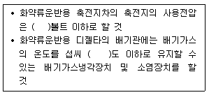
- 50, 80
- 80, 50
- 100, 70
- 70, 100
(정답률: 69%)
77. 불발된 장약에 대한 조치로 옳지 않은 것은?
- 장전된 화약류를 점화하여도 폭발되지 않을 때에는 점화 후 10분이상(전기발파의 경우 5분이상) 경과한 후가 아니면 화약류를 장전한 것에 사람의 출입을 금지할 것
- 불발된 천공된 구멍으로부터 60cm이상(손으로 뚫은 구멍인 경우에는 30cm이상)의 간격을 두고 평행으로 천공하여 다시 발파하고 불할한 화약류를 회수할 것
- 불발된 발파공에 압축공기를 넣어 메지를 뽑아내거나 뇌관에 영향을 미치지 아니하게 하면서 조금씩 장전하고 다시 점화할 것
- 불발된 천공된 구멍에 고무호오스로 물을 주입하고 그 물의 힘으로 메지와 화약류를 흘러나오게 하여 불발된 화약류를 회수할 것
(정답률: 62%)
78. 화약류의 판매업을 허가를 받지 아니하고 영위하였다면 어떤 처벌을 받는가?
- 1년 이하의 징역 또는 500만원 이하의 벌금
- 3년 이하의 징역 또는 700만원 이하의 벌금
- 5년 이하의 징역 또는 1000만원 이하의 벌금
- 10년 이하의 징역 또는 2000만원 이하의 벌금
(정답률: 45%)
79. 화약류 사용자가 화약류를 화약류저장소 외의 장소에 저장하는 등 저장기준을 위반하였을 경우 행정처분 기준으로 옳은 것은? (단, 3회 위반임)
- 6월 효력정지
- 3월 효력정지
- 1월 효력정지
- 면허취소
(정답률: 44%)
80. 피뢰장치의 위치·형식·구조 및 재료 등의 기분 중 피보호건물의 상단으로부터 돌침의 상단까지의 높이는 최소 몇 m이상으로 하여야 하는가?
- 10m 이상
- 5m 이상
- 3m 이상
- 2.5m 이상
(정답률: 46%)
5과목: 굴착공학
81. 다음 드림과 같은 토질사면에 발생하는 인장균열(tensile crack)의 깊이 z를 이론적으로 결정하는 데 필요한 토질의 물성치가 아닌 것은?
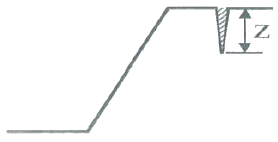
- 점착력
- 단위중량
- 내부마찰각
- 지지력 계수
(정답률: 52%)
82. 다음 중 SiO2의 함량에 따라 화성암을 분류할 때 중성암에 해당하는 것은?
- 안산암
- 유문암
- 반려암
- 현무암
(정답률: 55%)
83. 사면의 주향과 동일한 방향의 주향을 갖고 사면경사와 반대 방향의 급경사를 나타내는 불연속면이 존재하는 사면에서 발생할 수 있는 사면 파괴형태로 알맞은 것은?
- 쐐기파괴
- 원호파괴
- 전도파괴
- 평면파괴
(정답률: 50%)
84. 다음 NATM 보조공법 중 배수공법이 아닌 것은?
- 물빼기시추공법
- 약액주입공법
- Deep well공법
- Well point 공법
(정답률: 53%)
85. NATM 시공을 위해 지질조사를 계획하여 실시할 때 주목해야 할 사항으로 옳지 않은 것은?
- 팽압의 유무
- 암반의 자립성
- 용수량, 용수압
- 암반의 유도응력상태
(정답률: 35%)
86. 다음 중 숏크리트의 작용 효과에 해당하지 않은 것은?
- 내압 효과
- 빔 형성 효과
- 낙석의 방지 효과
- 지반 아지 형성 효과
(정답률: 60%)
87. 다음 중 수직분할 굴착공법으로 옳은 것은?
- 롱벤치컷공법
- 중벽분할공법
- 미니벤치컷공법
- 가인버트 굴착공법
(정답률: 50%)
88. Terzaghi의 암반 하중분류법에서 암반하중이 가장 크게 작용하는 암반상태로 옳은 것은?
- 팽창성 암반
- 압착성 암반
- 파쇄기 심한 암반
- 심한 블록상 층상 암반
(정답률: 53%)
89. 임의 지역에서 암반평가를 실시한 결과, RQD=70, Jn=7.0, Jr=2.0, 절리면의 변질계수는 2.0, Jw=1.0, SRF=1.0인 경우 Q값은?
- 10
- 15
- 20
- 30
(정답률: 50%)
90. 마찰각이 35°, 단위중량이 17kN/m3인 모래를 지지하고 있는 높이 5.5m의 연직벽체에 작용하는 전주동 토압은? (단, 모래의 표면은 수평이고, 수위면은 벽체바닥아래에 있다.)
- 57.4kN/m
- 69.4kN/m
- 77.4kN/m
- 87.4kN/m
(정답률: 50%)
91. 도시생활의 기반이 되는 통신시설 및 전력시설의 지중화는 지하의 어떤 특성을 이용한 것인가?
- 격리성
- 저장성
- 차광성
- 차음성
(정답률: 65%)
92. 터널의 특수굴착공법 중 침매공법에 대한 설명으로 옳지 않은 것은?
- 하첨, 해역 등 수조에 터널을 설치하는 경우 이용하는 공법이다.
- 지반중을 굴진하는 터널에 비하여 터널 전체 길이를 단축할 수 있다.
- 단면 형상은 유속, 수심 등의 영향으로 선택의 폭이 좁은 단점이 있다.
- 침매공법의 적용시 다량 발생되는 준설토사의 처분문제 등을 고려하여야 한다.
(정답률: 52%)
93. 다음 중 개방형 TBM의 굴착 중 암분이 수반된 암석 조각들이 발생에 따른 분진의 발생을 억제하거나 분진을 제거하는 방치가 아닌 것은?
- 세그먼트 쉴드
- 분진 배출 시스템
- 커터 헤드 후면의 분진 쉴드
- 커터 헤드에서 물을 분사하는 장치
(정답률: 60%)
94. 숏크리트 타설 시 첨가되는 급결제의 조건으로 옳지 않은 것은?
- 우수한 흡수성
- 강재의 부식방지
- 초기강도의 구현
- 최종강도에 영향을 주지 않음
(정답률: 45%)
95. 암반사면의 파괴형태가 발생할 수 있는 조건으로 옳지 않은 것은?
- 평면파괴 : 불연속면이 한 개만 발달한 경우
- 쐐기파괴 : 불연속면이 두 방향으로 발달하여 교차되는 경우
- 전도파괴 : 사면의 경사방향과 불연속면 경사방향이 이치하는 경우
- 원호파괴 : 불연속면이 많이 발달하여 뚜렷한 구조적 특징이 없는 경우
(정답률: 53%)
96. 역학적인 이방성암석으로 취급되어야 하는 것은?
- 응회암
- 현무암
- 화강암
- 결정편암
(정답률: 52%)
97. 암반의 초기응력을 구하기 위한 방법 중의 하나로써, 일축압축시험에서 얻어진 응력-변형률 곡선의 기울기의 변화로부터 초기응력을 산정하는 방법에 해당하는 것은?
- AE법
- DRA법
- Doorstopper법
- Flat jack법
(정답률: 62%)
98. 다음 중 옹벽에 작용하는 토압의 크기 순서로 옳은 것은?
- 정지토압 > 수동토압 > 주동토압
- 주동토압 > 정지토압 > 수동토압
- 수동토압 > 주동토압 > 정지토압
- 수동토압 > 정지토압 > 주동토압
(정답률: 55%)
99. 다음 중 지표지질조사와 관계가 없는 것은?
- 필요하면 지질공학도를 작성한다.
- 단층, 습곡, 절리 등의 지질구조도를 작성한다.
- 광역적인 지질분포 양상 및 지질구조선을 평가한다.
- 암석의 분포상태나 특성을 파악하여 지질재해의 가능성을 검토한다.
(정답률: 49%)
100. 천정부에 두께가 1.1m인 절리 암층이 존재하는 터널의 안정성 확보를 위하여 종방향, 횡방향으로 간격이 1.5m가 되도록 록볼트를 설치하였을 때, 록볼트의 안전율은? (단, 암반의 단위중량은 2.7ton/m3, 록볼트의 극한지지하중은 8ton이다.)
- 0.7
- 1.0
- 1.2
- 1.6
(정답률: 34%)